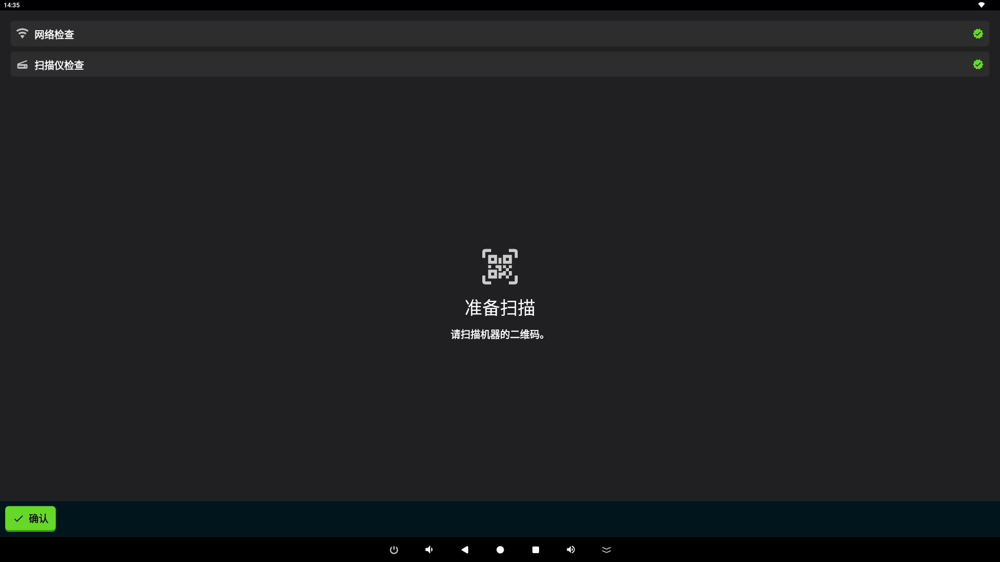
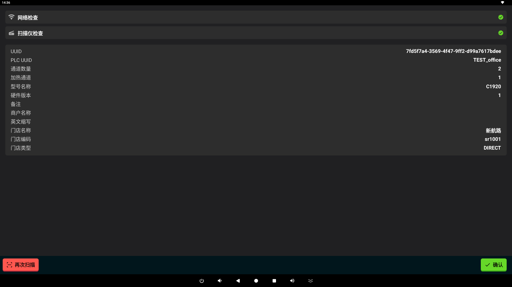
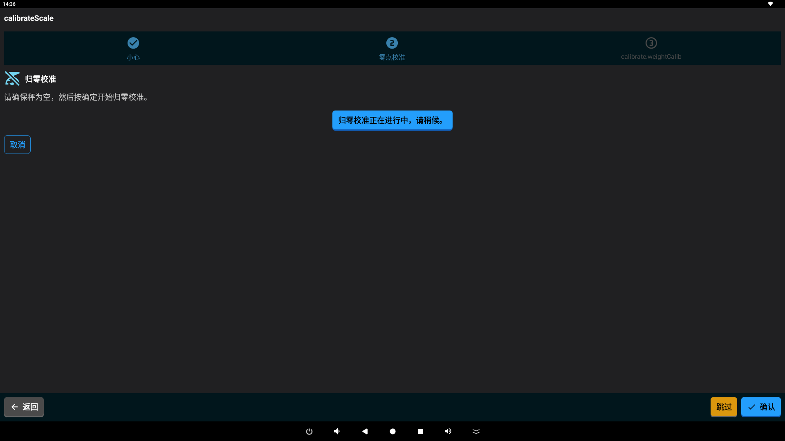
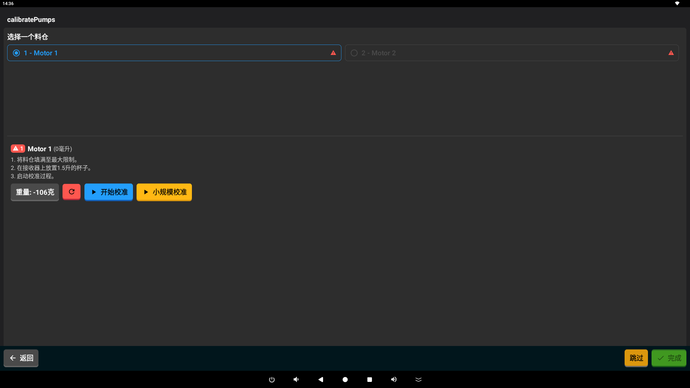

设置您的 Mixer
本指南将帮助您完成 Mixer 机器的首次设置。设置向导旨在为使用机器做好准备，确保一切都经过校准并就绪。
概览
设置过程是一个简单的分步指南。开始时，机器将恢复到出厂状态： - 当前任何用户都将注销。 - 之前的设置将被清除。 - 所有原料容器将被重置。 - 配方列表将被刷新。
该指南包含几个简单的步骤。
设置步骤
1. 连接与识别
第一步是将您的机器连接到互联网并进行识别。


扫描机器背面或侧面的二维码。- Wi-Fi 连接：确保您的机器连接到可靠的 Wi-Fi 网络。
- 扫描：使用应用扫描机器上的二维码。这有助于应用识别您的特定设备。
- 注册：应用将自动在我们的服务中注册您的机器。
- 检查组件：机器将对内部零件进行快速检查，例如扫描仪和泵。
- 加载数据：您的机器将下载最新的配置和可用原料。
2. 天平校准
接下来，您将按照指引确保内置天平准确。

天平校准屏幕。- 准确性检查：此步骤确保天平能正确测量原料。
- 归零：您将被要求确保天平在空载时读数为零。
- 重量检查：您可能会被要求放置一个已知重量的物体以确认准确性。
- 下一步：一旦天平准确，您就可以进行下一部分。
3. 泵校准
此步骤确保机器分配每种原料的准确量。

测试每个泵的准确性。- 分配精度：测试每个泵以确保其输送正确数量的液体。
- 验证：您将确认每个原料容器均已准备就绪并经过校准。
- 准备就绪：确认后，您的机器正式设置完毕并可以开始使用！您将被带到主仪表板。
完成设置
完成泵校准后：
 机器的主仪表板。
机器的主仪表板。
- 您的机器被标记为“就绪”。
- 您将被带到仪表板，在那里您可以开始制作配方！